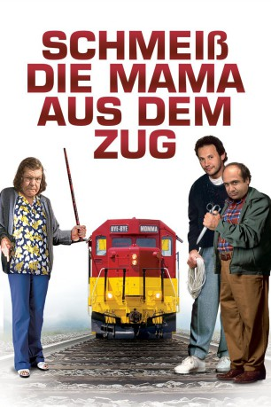
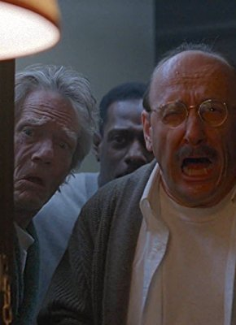

#996 Schmeiß' die Mama aus dem Zug!
Alternativ: Throw Momma from the Train
Auszeichnungen: für 1 Oscars nominiert
 
 IMDB-Wertung: 6.2 / 10
IMDB-Wertung: 6.2 / 10  Metascore: 56
Metascore: 56 
Der Schriftsteller und Literatur-Dozent Larry Donner erleidet eine kreative Krise, nachdem seine Frau ihn verlassen und mit einem seiner Romanstoffe Erfolg hatte. Owen Lift, ein Schüler Larrys, leidet unter dem Regiment seiner bösartigen Mutter. Hitchcocks Thriller "Der Fremde im Zug" liefert Owen die Lösung: morden über Kreuz, jeder begeht den Mord des anderen. Larry allerdings fällt aus allen Wolken, als Owen Vollzug meldet. Glücklicherweise wendet sich alles zum besten: Owens Mutter stirbt an Altersschwäche, Larrys Frau taucht wieder auf und Schüler und Dozent erringen ihren Bucherfolg mit der Verarbeitung des Abenteuers.
Jahr: 1987
Dauer: 87 Minuten
FSK: 12
Land: USA Studio: Orion PicturesTonspuren:
Untertitel: Englisch, ,
Auflösung: 1080p (1920x1040) Größe: 6809 MB
Genre: Komödie, Krimi, Thriller
Regisseur: Danny DeVito
Drehbuch: Stu Silver
Soundtrack: David Newman
Darsteller:
 Danny DeVito als Owen
Danny DeVito als Owen Billy Crystal als Larry
Billy Crystal als Larry- Kim Greist als Beth
 Anne Ramsey als Momma
Anne Ramsey als Momma Kate Mulgrew als Margaret
Kate Mulgrew als Margaret- Branford Marsalis als Lester
 Rob Reiner als Joel
Rob Reiner als Joel Bruce Kirby als Detective DeBenedetto
Bruce Kirby als Detective DeBenedetto- Annie Ross als Mrs. Hazeltine
 Oprah Winfrey als Herself
Oprah Winfrey als Herself- Randall Miller als Bucky
- Tony Ciccone als Mr. Lopez
- Joey DePinto als Sargeant
-  Raye Birk als Pinsky
- Olivia Brown als Ms. Gladstone
- Philip Perlman als Mr. Perlman
- Stu Silver als Ramon
- J. Alan Thomas als Millington
- Andre Rosey Brown als Rosey
- William Ray Watson als Steward
- Larry McCormick als Announcer
 Peter Brocco als Old Man
Peter Brocco als Old Man- Hettie Lynne Hurtes als Reporter
- Karen J. Westerfield als Laughing Woman
- Stanley L. Gonsales als Cab Driver
- Fred Gephart als Priest
- Don Burns als Radio DJ
- Billy Childs als Jazz Band
- Ralph Penland als Jazz Band
- Tony Dumas als Jazz Band
- Ne Kaholokula als Hawaiian Band of Musicians & Dancers
Datei: X:\1987\Schmeiß' die Mama aus dem Zug! (1987, FSK12, 1920x1040).mkv seit 04.05.2015
Festplatte: HD 1987-1991
 Es gibt insgesamt 50 Filme in der Gruppe '1987'
Es gibt insgesamt 50 Filme in der Gruppe '1987'